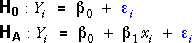

It is also important to realise that the t-test for each explanatory variable can give different results, depending on whether or not the other explanatory variable is also in the model.
T-test for X in full model
This is a t-test that is reported by most statistical software in the output from fitting a linear regression model with both explanatory variables X and Z. It compares the two models:

T-test for X in partial model (without Z)
There is another t-test for X that is used in the simple linear regression model that does not involve Z. It compares the models:

It is important to realise that these two t-tests can give different results. (And similarly for the corresponding two tests about Z.) When X and Z are multicollinear, X can explain a lot of variation in the response when Z is not in the model, but little extra variation in the response when Z is already there.
All possible tests for the slope parameters
The F-test and the four possible t-tests are shown in the diagram below. The tests compare the models to which the coloured arrows point.

Leafing-out time
The diagram below shows the leafing-out times that were described on the previous page. On the left, the full model involving both the latitude and July temperature of the seed sources is displayed. On the right, the simpler model involving only latitude is shown.
The t-tests under the diagram test whether latitude is needed in these two models. Observe that latitude is far more significant (lower p-value) when temperature is not in the model.
Select Temperature from the pop-up menu. The model displayed on the right changes to the model involving only temperature. Observe again that the evidence is much stronger for including temperature in the model if latitude is not present.